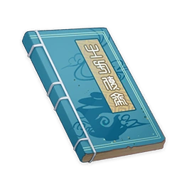

Liyue · Books & Literature
Humor From Tianheng
Ten poems credited to Pingshan, The Mystic, range from chess and summer mosquitoes to Jueyun Karst and Liyue's markets. The book describes its uneven verse as a reference for aspiring poets.

A poetry collection credited to Pingshan
The quest-item description credits Humor From Tianheng to Pingshan, The Mystic. It says the poems vary in quality, but that the collection has long served as a reference book for young poets and aspiring poets in Liyue. That description is the clearest context the game supplies for the book's reputation.
The record places the item in front of Verr Goldet at Wangshu Inn. The collection is a single quest item with ten short pieces, not a set of separately titled volumes or a continuous narrative.
Ten short poems, several kinds of humor
The poems move quickly between small observations and broad views: a badly played chess game, the strange forms of Liyue's rocks and plants, Jueyun Karst's hidden sky, sand in a poor poet's home, a nap disturbed by wind, and the seasonal work of gathering silvergrass.
Later pieces turn to Rex Lapis's landscape, summer mosquitoes, stars over the sea, and the cost of stones at Feiyun Slope. The collection's humor comes from its speaker's shifts in scale and judgment, rather than from one plot or a single running joke.
Self-mockery, taste, and money
The chess poem makes the observer's amusement part of the joke: he claims to watch without understanding, while admitting he is entertained. The next piece looks at Liyue's unusual scenery through an exaggeratedly confident eye, turning rocks and plants into a playful test of what an older viewer can appreciate.
The sand poem reverses the status of a supposedly precious object by making it something the rich cast out. The last poem makes the same kind of turn with the market: the speaker admires valuable stones, then decides that a meal at Yujing Terrace is a better use of Mora. These are comic voices in a poem collection, not evidence about actual prices or universal Liyue attitudes.
Local scenery as poetic invention
Several poems name recognizable places or figures. One imagines another sky at Jueyun Karst and links its birds and beasts to that hidden realm; another complains that Barbatos's wind disturbs the speaker's sleep; a later piece credits Rex Lapis with raising the mountain and making the bay. The sea poem pictures the stars as a canopy keeping the moon from falling into the water.
These lines blend local reference, familiar religious imagery, and playful exaggeration. They show how the collection turns Teyvat's scenery into verse; they are not a technical account of Jueyun Karst, an explanation of the moon's nature, or a substitute for the game's other records of Liyue's creation.
Ordinary discomfort and a more personal note
The poem about the wind god sets rest and fishing against an inconvenient neighbor, while the summer-forest piece ends with the speaker fleeing mosquitoes. Their punchlines come from ordinary discomfort rather than a story about merchants, miners, or officials.
The Qingce poem is gentler: its spring flowers bring a wish that the speaker's parents were present, then the seasonal harvesting of silvergrass becomes a practical image of preparing clothes for winter. That turn gives the collection a small note of longing alongside its jokes and scenic observations.
Poem or song in archived headings
Archived English records do not use the same heading for every piece: some label them as songs, while other transcriptions call them poems. The item description itself identifies the work as a poetry collection. This guide therefore uses poem as a neutral label and does not treat the heading variation as evidence of a separate edition or musical performance.
The transcriptions agree on the collection's ten-piece structure and on Pingshan's credit. When checking a particular line, consult the linked in-game text archives because wording and punctuation can vary between transcriptions.
What this collection can establish
The book establishes that Pingshan, The Mystic, is credited with a ten-poem collection that is described as uneven but influential among aspiring Liyue poets. Its pieces preserve a deliberately literary speaker moving through local places, food, work, money, weather, and family feeling.
The item does not give Pingshan a biography, date the poems, or identify them as a record of actual public opinion. Read its social observations as crafted verse and keep its playful landscape claims alongside, rather than in place of, Liyue's historical books and quest records.
This is an original CoreGG reading guide, not an official HoYoverse article or a reproduction of the game text. Source links below identify the records used so you can check the original context.
Sources & references
Check these sources for the original game text and reference trail.